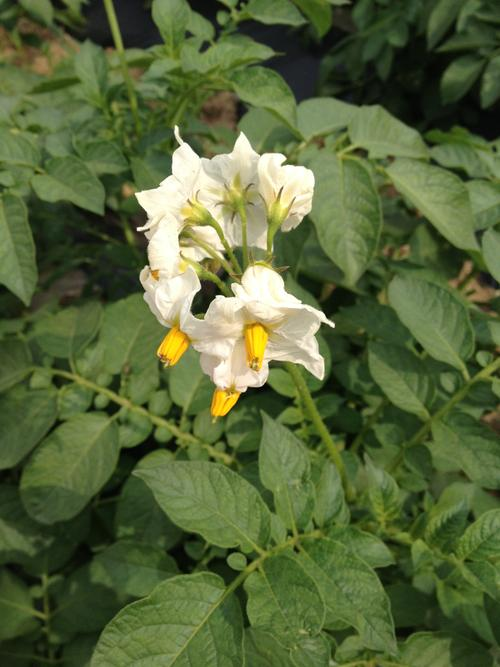

About this Article
Date Released:
Sunday, May 25 2014 9:17 PM2014-05-24~25 감자 순자르기, 옥수수 곁가지 제거, 열무 다시 심기
사실 감자 순자르기는 지금 생각해보면 2주전(줄기가 10cm ~ 20cm 자랐을때),
옥수수 곁가지 제거는 1주전(웃거름 줄때)에 했어야 한 것 같은데..
아직 잘 몰라서 오늘에서야 하게 됐어요. ㅡㅡ;;
이왕 늦어진 거 감자를 4그룹으로 나눠서 관찰해보기로 했어요.
- 1그룹: 비닐 멀칭 + 순자르기, 꽃망울 제거 감자
- 2그룹: 비닐 멀칭 감자
- 3그룹: 신문지 멀칭 + 순자르기, 꽃망울 제거 감자
- 4그룹: 신문지 멀칭 감자
6월이면, 감자 수확기인데 어떻게 될지 궁금하네요. ^^
그리고, 와이프가 열무김치 맛있다고 또 심으라고 해서
오늘 시금치, 열무 수확한 이랑에 난각캴슘을 뿌리고, 다시 열무를 심었어요.
이번엔 신문지 멀칭을 하고 점뿌리기로.. ^^
한 일
2014-05-24
- 감자 순자르기, 꽃망울 제거, 북돋우기
- 옥수수 북돋우기, 곁가지 제거
- 시금치 수확
- 당근 웃거름(4~5cm), 북돋우기, 솎음질
2014-05-25
- 열무 밑거름 및 파종
- 고구마 김매기
다음 할 일
- 당근 웃거름(7~10cm), 북돋우기, 솎음질
- 열무 싹출현 예정
- 고구마 김매기
<그림 1: 텃밭전경>

<그림 2: 감자>
감자 순자르기를 하며, 느낀 건데 비닐 멀칭 감자가 신문지 멀칭 감자보다 줄기가 더 튼튼하더라구요. 이래서 사람들이 비닐 멀칭을 하는구나 하는 생각이.. ^^
<그림 3: 옥수수>
<그림 4: 시금치>
<그림 5: 상추, 항암쌈배추>
와이프가 총각김치하고 남은 양념으로 항암쌈배추 겉저리를 했습니다. 그런데 배추보단 얇아서 상추무침 같네요.
<그림 6: 열무>
위에서 비닐 멀칭한 감자가 신문지 멀칭한 감자보다 더 튼튼하긴 했지만, 그래도 신문지로 승부를 보고 싶어 신문지를 좀 더 두껍게 해서 멀칭하고 흝어뿌림 대신 점뿌림으로 이번엔 심어봤습니다. (저녁에 비가 온다고 히니 왠지 기분이 좋아지네요. ^^)

<그림 7: 당근>
<그림 8: 고구마>
고구마는 토양을 비옥하게 하는지 고구마 이랑에는 잡초가 정말 하루가 다르게 무성해지네요.
오늘도 이랑 4개를 김매기해줬어요. 다음에는 꼭 다 해줘야겠어요. ㅡㅡ;;
<그림 9: 곱게 빻은 계란껍질>
그동안 모아놓은 계란껍질은 절구로 곱게 빻아서 열무 밑거름과 감자, 옥수수 웃거름으로 사용했어요.